일반기계기사 (2020-08-22 기출문제)
1과목: 재료역학
1. 다음 외팔보가 균일분포 하중을 받을 때, 굽힘에 의한 탄성변형 에너지는? (단, 굽힘강성 EI는 일정하다.)
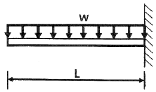
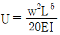
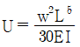
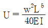
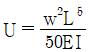
(정답률: 52%)

2. 길이 10m, 단면적 2cm2인 철봉을 100℃에서 그림과 같이 양단을 고정했다. 이 봉의 온도가 20℃로 되었을ㅇ때 인장력은 약 몇 kN인가? (단, 세로탄성계수는 200GPa, 선팽창계수 a=0.000012/℃ 이다.)
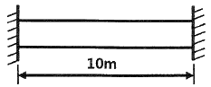
- 19.2
- 25.5
- 38.4
- 48.5
(정답률: 63%)
3. 그림과 같은 단순 지지보에 모멘트(M)와 균일 분포하중(w)이 작용할 때, A점의 반력은?
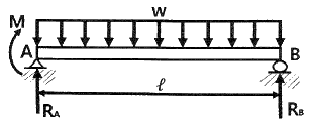
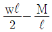
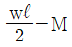
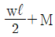
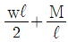
(정답률: 49%)
4. 그림과 같이 원형단면을 가진 보가 인장하중 P=90kN을 받는다. 이 보는 강(steel)으로 이루어져 있고, 세로탄성계수 210GPa이며 포와송비 μ=1/3 이다. 이 보의 체적변화 △V는 약 몇 mm3 인가? (단, 보의 직경 d = 30mm, 길이 L = 5m 이다.)
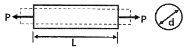
- 114.28
- 314.28
- 514.28
- 714.28
(정답률: 43%)
5. 길이 3m, 단면의 지름 3cm 인 균일 단면의 알루미늄 봉이 있다. 이 봉에 인장하중 20kN이 걸리면 봉은 약 몇 cm 늘어나는가? (단, 세로탄성계수는 72 GPa 이다.)
- 0.118
- 0.239
- 1.18
- 2.39
(정답률: 62%)
6. 판 두께 3mm를 사용하여 내압 20kN/cm2을 받을 수 있는 구형(spherical) 내압용기를 만들려고 할 때, 이 용기의 최대 안전내경 d를 구하면 몇 cm 인가? (단, 이 재료의 허용 인장응력을 σw=800 kN/cm2을 한다.)
- 24
- 48
- 72
- 96
(정답률: 47%)
7. 그림과 같은 돌출보에서 ω=120 kN/m의 등분포 하중이 작용할 때, 중앙 부분에서의 최대 굽힘응력은 약 몇 MPa 인가? (단, 단면은 표준 I형 보로 높이 h = 60cm 이고, 단면 2차 모멘트 I = 98200 cm4 이다.)
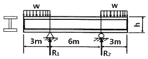
- 125
- 165
- 185
- 195
(정답률: 46%)
8. 다음과 같이 스팬(span) 중앙에 힌지(hinge)를 가진 보의 최대 굽힘모멘트는 얼마인가?
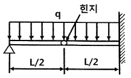
- qL2/4
- qL2/6
- qL2/8
- qL2/12
(정답률: 21%)
9. 다음 그림과 같이 부채꼴의 도심(centroid)의 위치
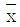
는?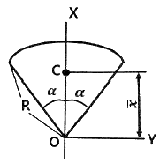
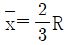
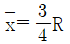
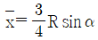
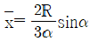
(정답률: 55%)
10. 그림과 같이 800N의 힘이 브래킷의 A에 작용하고 있다. 이 힘의 점 B에 대한 모멘트는 약 몇 N·m 인가?
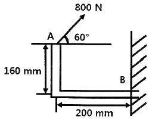
- 160.6
- 202.6
- 238.6
- 253.6
(정답률: 58%)
11. 다음과 같은 평면응력 상태에서 최대 주응력 σ1은?
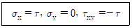
- 1.414τ
- 1.80τ
- 1.618τ
- 2.828τ
(정답률: 58%)
12. 0.4m×0.4m인 정사각형 ABCD를 아래 그림에 나타내었다. 하중을 가한 후의 변형 상태는 점선으로 나타내었다. 이때 A 지점에서 전단 변형률 성분의 평균값(γxy)는?
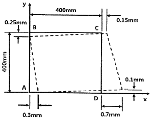
- 0.001
- 0.000625
- -0.00⑤
- -0.000625
(정답률: 29%)
13. 비틀림모멘트 2kN·m가 지름 50mm인 축에 작용하고 있다. 축의 길이가 2m일 때 축의 비틀림각은 약 몇 rad 인가? (단, 축의 전단탄성계수는 85 GPa 이다.)
- 0.019
- 0.028
- 0.⑤4
- 0.077
(정답률: 66%)
14. 그림과 같이 외팔보의 끝에 집중하중 P가 작용할 때 자유단에서의 처짐각 θ는? (단, 보의 굽힘강성 EI는 일정하다.)
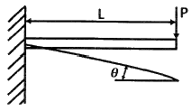
- PL2/2EI
- PL3/6EI
- PL2/8EI
- PL2/12EI
(정답률: 63%)
15. 지름 70mm인 환봉에 20 MPa의 최대전단응력이 생겼을 때 비틀림모멘트는 약 몇 kN·m 인가?
- 4.50
- 3.60
- 2.70
- 1.35
(정답률: 64%)
16. 다음 구조물에 하중 P=1kN이 작용할 때 연결핀에 걸리는 전단응력은 약 얼마인가? (단, 연결핀의 지름은 5mm 이다.)
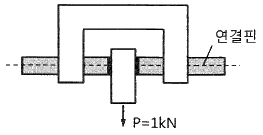
- 25.46 kPa
- 50.92 kPa
- 25.46 MPa
- 50.92 MPa
(정답률: 51%)
17. 100rpm으로 30kW를 전달시키는 길이 1m, 지름 7cm인 둥근 축단의 비틀림각은 약 몇 rad 인가? (단, 전단탄성계수는 83 GPa 이다.)
- 0.26
- 0.30
- 0.015
- 0.009
(정답률: 63%)
18. 그림과 같이 균일단면을 가진 단순보에 균일하중 ωkN/m이 작용할 때, 이 보의 탄성 곡선식은? (단, 보의 굽힘 강성 EI는 일정하고, 자중은 무시한다.)
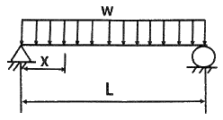
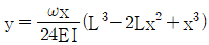
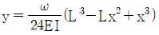
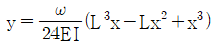
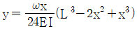
(정답률: 34%)
19. 길이가 5m이고 직경이 0.1m인 양단고정보 중앙에 200N의 집중하중이 작용할 경우 보의 중앙에서의 처짐은 약 몇 m 인가? (단, 보의 세로탄성계수는 200GPa 이다.)
- 2.36×10-5
- 1.33×10-4
- 4.58×10-4
- 1.06×10-3
(정답률: 55%)
20. 그림과 같은 단주에서 편심거리 e에 압축하중 P=80kN이 작용할 때 단면에 인장응력이 생기지 않기 위한 e의 한계는 몇 cm 인가? (단, G는 편심 하중이 작용하는 단주 끝단의 평면상 위치를 의미한다.)
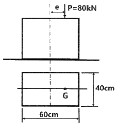
- 8
- 10
- 12
- 14
(정답률: 50%)
2과목: 기계열역학
21. 단열된 노즐에 유체가 10m/s의 속도로 들어와서 200m/s의 속도로 가속되어 나간다. 출구에서의 엔탈피가 2770 kJ/kg일 때 입구에서의 엔탈피는 약 몇 kJ/kg인가?
- 4370
- 4210
- 2850
- 2790
(정답률: 55%)
22. 이상적인 교축과정(throttling process)을 해석하는데 있어서 다음 설명 중 옳지 않은 것은?
- 엔트로피는 증가한다.
- 엔탈피의 변화가 없다고 본다.
- 정압과정으로 간주한다.
- 냉동기의 팽창밸브의 이론적인 해석에 적용될 수 있다.
(정답률: 38%)
23. 다음은 오토(Otto) 사이클의 온도-엔트로피(T-S) 선도이다. 이 사이클의 열효율을 온도를 이용하여 나타낼 때 옳은 것은? (단, 공기의 비열은 일정한 것으로 본다.)
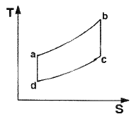
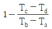
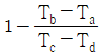
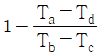
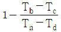
(정답률: 56%)
24. 전류 25A, 전압 13V를 가하여 축전지를 충전하고 있다. 충전하는 동안 축전지로부터 15W의 열손실이 있다. 축전지의 내부에너지 변화율은 약 몇 W 인가?
- 310
- 340
- 370
- 420
(정답률: 50%)
25. 이상적인 랭킨사이클에서 터빈 입구 온도가 350℃이고, 75kPa과 3MPa의 압력범위에서 작동한다. 펌프 입구와 출구, 터빈 입구와 출구에서 엔탈피는 각각 384.4 kJ/kg, 387.5kJ/kg, 3116kJ/kg, 2403kJ/kg 이다. 펌프일을 고려한 사이클의 열효율과 펌프일을 무시한 사이클의 열효율 차이는 약 몇 % 인가?
- 0.0011
- 0.092
- 0.11
- 0.18
(정답률: 31%)
26. 다음 중 강도성 상태량(intensive property)이 아닌 것은?
- 온도
- 내부에너지
- 밀도
- 압력
(정답률: 60%)
27. 압력이 0.2MPa, 온도가 20℃의 공기를 압력이 2MPa로 될 때까지 가역단열 압축했을 때 온도는 약 몇 ℃ 인가? (단, 공기는 비열비가 1.4인 이상기체로 간주한다.)
- 225.7
- 273.7
- 292.7
- 358.7
(정답률: 58%)
28. 100℃의 구리 10kg을 20℃의 물 2kg이 들어있는 단열 용기에 넣었다. 물과 구리 사이의 열전달을 통한 평형 온도는 약 몇 ℃ 인가? (단, 구리 비열은 0.45 kJ(kg·K), 물 비열은 4.2kJ/(kg·K)이다.)
- 48
- 54
- 60
- 68
(정답률: 59%)
29. 고온열원(T1)과 저온열원(T2) 사이에서 작동하는 역카르노 사이클에 의한 열펌프(heat pump)의 성능계수는?
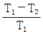
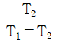
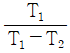
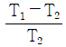
(정답률: 51%)
30. 다음 중 스테판-볼츠만의 법칙과 관련이 있는 열전달은?
- 대류
- 복사
- 전도
- 응축
(정답률: 48%)
31. 이상기체로 작동하는 어떤 기관의 압축비가 17이다. 압축 전의 압력 및 온도는 112kPa, 25℃이고 압축 후의 압력은 4350 kPa 이었다. 압축 후의 온도는 약 몇 ℃ 인가?
- 53.7
- 180.2
- 236.4
- 407.8
(정답률: 42%)
32. 어떤 물질에서 기체상수(R)가 0.189 kJ/(kg·K), 임계온도가 3⑤K, 임계압력이 7380 kPa 이다. 이 기체의 압축성 인자(compressibility factor, Z)가 다음과 같은 관계식을 나타낸다고 할 때 이 물질의 20℃, 1000 kPa 상태에서의 비체적(v)은 약 몇 m3/kg 인가? (단, P는 압력, T는 절대온도, Pr은 환산압력, Tr은 환산온도를 나타낸다.)
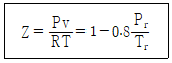
- 0.0111
- 0.0303
- 0.0491
- 0.⑤54
(정답률: 25%)
33. 어떤 유체의 밀도가 740 kg/m3 이다. 이 유체의 비체적은 약 몇 m3/kg 인가?
- 0.78×10-3
- 1.35×10-3
- 2.35×10-3
- 2.98×10-3
(정답률: 63%)
34. 클라우지우스(Clausius)의 부등식을 옳게 나타낸 것은? (단, T는 절대온도, Q는 시스템으로 공급된 전체 열량을 나타낸다.)
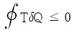
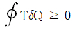
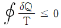
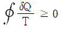
(정답률: 62%)
35. 이상기체 2kg이 압력 98kPa, 온도 25℃ 상태에서 체적이 0.5m3 였다면 이 이상기체의 기체상수는 약 몇 J/(kg·K)인가?
- 79
- 82
- 97
- 102
(정답률: 64%)
36. 압력(P)-부피(V) 선도에서 이상기체가 그림과 같은 사이클로 작동한다고 할 때 한 사이클 동안 행한 일은 어떻게 나타내는가?
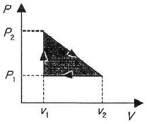
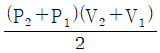
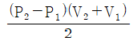
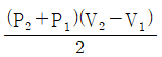
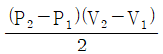
(정답률: 63%)
37. 기체가 0.3MPa로 일정한 압력 하에 8m3에서 4m3까지 마찰없이 압축되면서 동시에 500kJ의 열을 외부로 방출하였다면, 내부에너지의 변화는 약 몇 kJ 인가?
- 700
- 1700
- 1200
- 1400
(정답률: 48%)
38. 카르노사이클로 작동하는 열기관이 1000℃의 열원과 300K의 대기 사이에서 작동한다. 이 열기관이 사이클 당 100kJ의 일을 할 경우 사이클 당 1000℃의 열원으로부터 받은 열량은 약 몇 kJ인가.?
- 70.0
- 76.4
- 130.8
- 142.9
(정답률: 43%)
39. 냉매가 갖추어야 할 요건으로 틀린 것은?
- 증발온도에서 높은 잠열을 가져야 한다.
- 열전도율이 커야 한다.
- 표면장력이 커야 한다.
- 불활성이고 안전하며 비가연성이어야 한다.
(정답률: 55%)
40. 어떤 습증기의 엔트로피가 6.78 kJ/(kg·K)라고 할 때 이 습증기의 엔탈피는 약 몇 kJ/kg 인가? (단, 이 기체의 포화액 및 포화증기의 엔탈피와 엔트로피는 다음과 같다.)
- 2365
- 2402
- 2473
- 2511
(정답률: 55%)
3과목: 기계유체역학
41. 유체의 정의를 가장 올바르게 나타낸 것은?
- 아무리 작은 전단응력에도 저항할 수 없어 연속적으로 변형하는 물질
- 탄성계수가 0을 초과하는 물질
- 수직응력을 가해도 물체가 변하지 않는 물질
- 전단응력이 가해질 때 일정한 양의 변형이 유지되는 물질
(정답률: 63%)
42. 비압축성 유체가 그림과 같이 단면적 A(x)=1-0.04x(m2)로 변화하는 통로 내를 정상상태로 흐를 때 P점(x=0)에서의 가속도(m/s2)는 얼마인가? (단, P점에서의 속도는 2m/s, 단면적은 1m2이며, 각 단면에서 유속은 균일하다고 가정한다.)
- -0.08
- 0
- 0.08
- 0.16
(정답률: 13%)
43. 낙차가 100m인 수력발전소에서 유량이 5m3/s이면 수력터빈에서 발생하는 동력(MW)은 얼마인가? (단, 유도관의 마찰손실은 10m 이고, 터빈의 효율은 80% 이다.)
- 3.53
- 3.92
- 4.41
- 5.52
(정답률: 36%)
44. 공기의 속도 24m/s인 풍동 내에서 익현길이 1m, 익의 폭 5m인 날개에 작용하는 양력(N)은 얼마인가? (단, 공기의 밀도는 1.2 kg/m3, 양력계수는 0.455 이다.)
- 1572
- 786
- 393
- 91
(정답률: 60%)
45. 그림과 같이 유리관 A, B 부분의 안지름은 각각 30cm, 10cm 이다. 이 관에 물을 흐르게 하였더니 A에 세운 관에는 물이 60cm, B에 세운 관에는 물이 30cm 올라갔다. A와 B 각 부분에서 물의 속도(m/s)는?
- VA = 2.73, VB = 24.5
- VA = 2.44, VB = 22.0
- VA = 0.542, VB = 4.88
- VA = 0.271, VB = 2.44
(정답률: 32%)
46. 직경 1cm 인 원형관 내의 물의 유동에 대한 천이 레이놀즈수는 2300 이다. 천이가 일어날 때 물의 평균유속(m/s)은 얼마인가? (단, 물의 동점성계수는 10-6/m2/s 이다.)
- 0.23
- 0.46
- 2.3
- 4.6
(정답률: 57%)
47. 해수의 비중은 1.025 이다. 바닷물 속 10m 깊이에서 작업하는 해녀가 받는 계기압력(kPa)은 약 얼마인가?
- 94.4
- 100.5
- 1⑤.6
- 112.7
(정답률: 60%)
48. 체적이 30m3인 어느 기름의 무게가 247 kN이었다면 비중은 얼마인가? (단, 물의 밀도는 1000 kg/m3 이다.)
- 0.80
- 0.82
- 0.84
- 0.86
(정답률: 51%)
49. 3.6m3/min을 양수하는 펌프의 송출구의 안지름이 23cm 일 때 평균 유속(m/s)은 얼마인가?
- 0.96
- 1.20
- 1.32
- 1.44
(정답률: 62%)
50. 어떤 물리적인 계(system)에서 물리량 F가 물리량 A, B, C, D의 함수 관계가 있다고 할 때, 차원해석을 한 결과 두 개의 무차원수, F/AB2 와 B/CD2를 구할 수 있었다. 그리고 모형실험을 하여 A=1, B=1, C=1, D=1 일 때 F=F1을 구할 수 있었다. 여기서 A=2, B=4, C=1, D=2 인 원형의 F는 어떤 값을 가지는가? (단, 모든 값들을 SI단위를 가진다.)
- F1
- 16F1
- 32F1
- 위의 자료만으로는 예측할 수 없다.
(정답률: 42%)
51. (x, y)평면에서의 유동함수(정상, 비압축성 유동)가 다음과 같이 정의된다면 x=4m, y=6m 의 위치에서의 속도(m/s)는 얼마인가?
- 156
- 92
- 52
- 38
(정답률: 35%)
52. 수면의 차이가 H인 두 저수지 사이에 지름 d, 길이 ℓ인 관로가 연결되어 있을 때 관로에서의 평균 유속(V)을 나타내는 식은? (단, f는 관마찰계수이고, g는 중력가속도이며, K1, K2는 관입구와 출구에서의 부차적 손실계수이다.)
(정답률: 52%)
53. 그림과 같은 두 개의 고정된 평판 사이에 얇은 판이 있다. 얇은 판 상부에는 점성계수가 0.⑤ N·s/m2인 유체가 있고 하부에는 점성계수가 0.1N·S/m2인 유체가 있다. 이 판을 일정속도 0.5m/s로 끌 때, 끄는 힘이 최소가 되는 거리 y는? (단, 고정 평판사이의 폭은 h(m), 평판들 사이의 속도분포는 선형이라고 가정한다.)
- 0.293 h
- 0.482 h
- 0.586 h
- 0.879 h
(정답률: 24%)
54. 어떤 물리량 사이의 함수관계가 다음과 같이 주어졌을 때, 독립 무차원수 Pi항은 몇 개인가? (단, a는 가속도, V는 속도, t는 시간, ν는 동점성계수, L은 길이이다.)
- 1
- 2
- 3
- 4
(정답률: 46%)
55. 그림과 같은 노즐을 통하여 유량 Q만큼의 유체가 대기로 분출될 때, 노즐에 미치는 유체의 힘 F는? (단, A1, A2는 노즐의 단면 1, 2에서의 단면적이고 ρ는 유체의 밀도이다.)
(정답률: 32%)
56. 국소 대기압이 1atm 이라고 할 때, 다음 중 가장 높은 압력은?
- 0.13 atm(gage pressure)
- 115 kPa(absolute pressure)
- 1.1 atm(absolute pressure)
- 11 mH2O(absolute pressure)
(정답률: 54%)
57. 프란틀의 혼합거리(mixing length)에 대한 설명으로 옳은 것은?
- 전단응력과 무관하다.
- 벽에서 0 이다.
- 항상 일정하다.
- 층류 유동문제를 계산하는데 유용하다.
(정답률: 36%)
58. 수평원관 속에 정상류의 층류흐름이 있을 때 전단응력에 대한 설명으로 옳은 것은?
- 단면 전체에서 일정하다.
- 벽면에서 0 이고 관 중심까지 선형적으로 증가한다.
- 관 중심에서 0 이고 반지름 방향으로 선형적으로 증가한다.
- 관 중심에서 0 이고 반지름 방향으로 중심으로부터 거리의 제곱에 비례하여 증가한다.
(정답률: 53%)
59. 밀도 1.6kg/m3 인 기체가 흐르는 관에 설치한 피토 정압관(Pitot-static tube)의 두 단자 간 압력차가 4cmH2O 이었다면 기체의 속도(m/s)는 얼마인가?
- 7
- 14
- 22
- 28
(정답률: 32%)
60. 그림과 같이 원판 수문이 물속에 설치되어 있다. 그림 중 C는 압력의 중심이고, G는 원판의 도심이다. 원판의 지름을 d라 하면 작용점의 위치 η는?
(정답률: 51%)
4과목: 기계재료 및 유압기기
61. 다음 중 강종 중 탄소의 함유량이 가장 많은 것은?
- SM25C
- SKH51
- STC1⑤
- STD11
(정답률: 31%)
62. 주철의 조직을 지배하는 요소로 옳은 것은?
- S, Si의 양과 냉각 속도
- C, Si의 양과 냉각 속도
- P, Cr의 양과 냉각 속도
- Cr, Mg의 양과 냉각 속도
(정답률: 71%)
63. 강을 생산하는 제강로를 염기성과 산성으로 구분하는데 이것은 무엇으로 구분하는가?
- 로 내의 내화물
- 사용되는 철광석
- 발생하는 가스의 성질
- 주입하는 용제의 성질
(정답률: 48%)
64. 염욕의 관리에서 강박 시험에 대한 다음 ( ) 안에 알맞은 내용은?
- 산화
- 한원
- 탈탄
- 촉매
(정답률: 63%)
65. 5~20%Zn의 황동을 말하며, 강도는 낮으나 전연성이 좋고, 색깔이 금에 가까우므로 모조금이나 판 및 선 등에 사용되는 것은?
- 톰백
- 두랄루민
- 문쯔메탈
- Y-합금
(정답률: 58%)
66. 다음 중 결합력이 가장 약한 것은?
- 이온결합(ionic bond)
- 공유결합(covalent bond)
- 금속결합(metallic bond)
- 반데발스결합(Van der Waals bond)
(정답률: 51%)
67. Ni-Fe계 합금에 대한 설명으로 틀린 것은?
- 엘린바는 온도에 따른 탄성율의 변화가 거의 없다.
- 슈퍼인바는 20℃에서 팽창계수가 거의 0(zero)에 가깝다.
- 인바는 열팽창계수가 상온부근에서 매우 작아 길이의 변화가 거의 없다.
- 플래티나이트는 60%Ni와 15%Sn 및 Fe의 조성을 갖는 소결합금이다.
(정답률: 53%)
68. Fe-Fe3C 평형상태도에서 Acm선 이란?
- 마텐자이트가 석출되는 온도선을 말한다.
- 트루스타이트가 석출되는 온도선을 말한다.
- 시멘타이트가 석출되는 온도선을 말한다.
- 소르바이트가 석출되는 온도선을 말한다.
(정답률: 64%)
69. 피로 한도에 대한 설명으로 옳은 것은?
- 지름이 크면 피로한도는 커진다.
- 노치가 있는 시험편의 피로한도는 크다.
- 표면이 거친 것이 고온 것보다 피로한도가 커진다.
- 노치가 있을 때와 없을 때의 피로한도 비를 노치 계수라 한다.
(정답률: 48%)
70. 유화물 계통의 편석 및 수지상 조직을 제거하여 연신율을 향상시킬 수 있는 열처리 방법으로 가장 적합한 것은?
- 퀜칭
- 템퍼링
- 확산 풀림
- 재결정 풀림
(정답률: 30%)
71. 상시 개방형 밸브로 옳은 것은?
- 감압 밸브
- 무부하 밸브
- 릴리프 밸브
- 카운터 밸런스 밸브
(정답률: 47%)
72. 그림과 같은 단동실린더에서 피스톤에 F=500N의 힘이 발생하면, 압력 P는 약 몇 kPa이 필요한가? (단, 실린더의 직경은 40mm 이다.)
- 39.8
- 398
- 79.6
- 796
(정답률: 65%)
73. 실린더 입구의 분기 회로에 유량 제어 밸브를 설치하여 실린더 입구측의 불필요한 압유를 배출시켜 작동 효율을 증진시키는 회로는?
- 로킹 회로
- 증강 회로
- 동조 회로
- 블리드 오프 회로
(정답률: 64%)
74. 감압 밸브, 체크 밸브, 릴리프 밸브 등에서 밸브시트를 두드려 비교적 높은 음을 내는 일종의 자려진동 현상은?
- 컷인
- 점핑
- 채터링
- 디컴프레션
(정답률: 74%)
75. 그림과 같은 유압기호가 나타내는 것은? (단, 그림의 기호는 간략 기호이며, 간략 기호에서 유로의 화살표는 압력의 보상을 나타낸다.)
- 가변 교축 밸브
- 무부하 릴리프 밸브
- 직렬형 유량조정 밸브
- 바이패스형 유량조정 밸브
(정답률: 58%)
76. 기어펌프의 폐입 현상에 관한 설명으로 적절하지 않은 것은?
- 진동, 소음의 원인이 된다.
- 한 쌍의 이가 맞물려 회전할 경우 발생한다.
- 폐입 부분에서 팽창 시 고압이, 압축 시 진공이 형성된다.
- 방지책으로 릴리프 홈에 의한 방법이 있다.
(정답률: 60%)
77. 어큐뮬레이터의 용도와 취급에 대한 설명으로 틀린 것은?
- 누설유량을 보충해 주는 펌프 대용 역할을 한다.
- 어큐뮬레이터에 부속쇠 등을 용접하거나 가공, 구멍 뚫기 등을 해서는 안된다.
- 어큐뮬레이터를 운반, 결합, 분리 등을 할 때는 봉입가스를 유지하여야 한다.
- 유압 펌프에 발생하는 맥동을 흡수하여 이상 압력을 억제하여 진동이나 소음을 방지한다.
(정답률: 51%)
78. 유압 회로에서 속도 제어 회로의 종류가 아닌 것은?
- 미터 인 회로
- 미터 아웃 회로
- 블리드 오프 회로
- 최대 압력 제한 회로
(정답률: 72%)
79. 유압유의 점도가 낮을 때 유압 장치에 미치는 영향으로 적절하지 않은 것은?
- 배관 저항 증대
- 유압유의 누설 증가
- 펌프의 용적 효율 저하
- 정확한 작동과 정밀한 제어의 곤란
(정답률: 61%)
80. 일반적인 베인 펌프의 특징으로 적절하지 않은 것은?
- 부품수가 많다.
- 비교적 고장이 적고 보수가 용이하다.
- 펌프의 구동 동력에 비해 형상이 소형이다.
- 기어 펌프나 피스톤 펌프에 비해 토출 압력의 맥동이 크다.
(정답률: 46%)
5과목: 기계제작법 및 기계동력학
81. 다음 그림과 같은 조건에서 어떤 투사체가 초기속도 360m/s로 수평방향과 30°의 각도로 발사되었다. 이때 2초 후 수직방향에 대한 속도는 약 몇 m/s 인가? (단, 공기저항 무시, 중력가속도는 9.81 m/s2 이다.)
- 40.1
- 80.2
- 160
- 321
(정답률: 43%)
82. 1자유도의 질량-스프링계에서 스프링 상수 k가 2kN/m, 질량 m이 20kg일 때, 이 계의 고유주기는 약 몇 초인가? (단, 마찰은 무시한다.)
- 0.63
- 1.54
- 1.93
- 2.34
(정답률: 43%)
83. 두 조화운동 x1=4sin10t와 x2=4sin10.2t를 합성하면 맥놀이(beat)현상이 발생하는데 이때 맥놀이 진동수(Hz)는 약 얼마인가? (단, t의 단위는 s이다.)
- 31.4
- 62.8
- 0.0159
- 0.0318
(정답률: 35%)
84. 어떤 물체가 로 진동할 때 진동주기 T[s]는 약 얼마인가?
- 1.57
- 2.54
- 4.71
- 6.28
(정답률: 46%)
85. 200kg의 파일을 땅속으로 박고자 한다. 파일 위의 1.2m 지점에서 무게가 1t인 해머가 떨어질 때 완전 소성 충돌이라고 한ᄃᆞ면 이때 파일이 땅속으로 들어가는 거리는 약 몇 인가? (단, 파일에 가해지는 땅의 저항력은 150kN 이고, 중력가속도는 9.81 m/s2 이다.)
- 0.07
- 0.09
- 0.14
- 0.19
(정답률: 18%)
86. 1자유도 시스템에서 감쇠비가 0.1인 경우 대수감소율은?
- 0.2315
- 0.4315
- 0.6315
- 0.8315
(정답률: 45%)
87. 수평면과 a의 각을 이루는 마찰이 있는(마찰계수 μ) 경사면에서 무게가 W인 물체를 힘 P를 가하여 등속력으로 끌어올릴 때, 힘 P가 한 일에 대한 무게 W인 물체를 끌어올리는 일의 비, 즉 효율은?
(정답률: 26%)
88. 반경이 r인 실린더가 위치 1의 정지상태에서 경사를 따라 높이 h만큼 굴러 내려갔을 때, 실린더 중심의 속도는? (단, g는 중력가속도이며, 미끄러짐은 없다고 가정한다.)
(정답률: 29%)
89. 평탄한 지면 위를 미끄럼이 없이 구르는 원통 중심의 가속도가 1m/s2 일 때 이 원통의 각가속도는 몇 rad/s2 인가? (단, 반지름 r은 2m이다.)
- 0.2
- 0.5
- 5
- 10
(정답률: 53%)
90. 자동차가 반경 50m 의 원형도로를 25m/s의 속도로 달리고 있을 때, 반경방향으로 작용하는 가속도는 몇 m/s2 인가?
- 9.8
- 10.0
- 12.5
- 25.0
(정답률: 51%)
91. 3차원 측정기에서 측정물의 측정위치를 감지하여 X, Y, Z축의 위치 데이터를 컴퓨터에 전송하는 기능을 가진 것은?
- 프로브
- 측정암
- 컬럼
- 정반
(정답률: 52%)
92. 피복아크용접봉의 피복제 역할로 틀린 것은?
- 아크를 안정시킨다.
- 모재 표면의 산화물을 제거한다.
- 용착금속의 급랭을 방지한다.
- 용착금속의 흐름을 억제한다.
(정답률: 59%)
93. 와이어 컷 방전가공에서 와이어 이송속도 0.2mm/min, 가공물 두께가 10mm 일 때 가공속도는 몇 mm2/min 인가?
- 0.02
- 0.2
- 2
- 20
(정답률: 61%)
94. 단조용 공구 중 소재를 올려놓고 타격을 가할 때 받침대로 사용하며 크기는 중량으로 표시하는 것은?
- 대뫼
- 앤빌
- 정반
- 단조용 탭
(정답률: 43%)
95. 두께 5mm의 연강판에 직경 10mm의 펀칭 작업을 하는데 크랭크 프레스 램의 속도가 10m/min이라면 이 때 프레스에 공급되어야 할 동력은 약 몇 kW 인가? (단, 연강판의 전단강도는 294.3 MPa 이고, 프레스의 기계적 효율은 80% 이다.)
- 21.32
- 15.54
- 13.52
- 9.63
(정답률: 41%)
96. 목재의 건조방법에서 자연건조법에 해당하는 것은?
- 야적법
- 침재법
- 자재법
- 증재법
(정답률: 51%)
97. 전해연마 가공법의 특징이 아닌 것은?
- 가공면에 방향성이 없다.
- 복잡한 형상의 제품도 연마가 가능하다.
- 가공 변질층이 있고 평활한 가공면을 얻을 수 있다.
- 연질의 알루미늄, 구리 등도 쉽게 광택면을 얻을 수 있다.
(정답률: 46%)
98. 절연성의 가공액 내에 도전성 재료의 전극과 공작물을 넣고 약 60~300V의 펄스 전압을 걸어 약 5~50 μm까지 접근시켜 발생하는 스파크에 의한 가공방법은?
- 방전가공
- 전해가공
- 전해연마
- 초음파가공
(정답률: 55%)
99. 다음 공작기계에 사용되는 속도열 중 일반적으로 가장 많이 사용되고 있는 속도열은?
- 대수급수 속도열
- 등비급수 속도열
- 등차급수 속도열
- 조화급수 속도열
(정답률: 48%)
100. 저온 뜨임에 대한 설명으로 틀린 것은?
- 담금질에 의한 응력 제거
- 치수의 경년 변화 방지
- 연마균열 생성
- 내마모성 향상
(정답률: 64%)